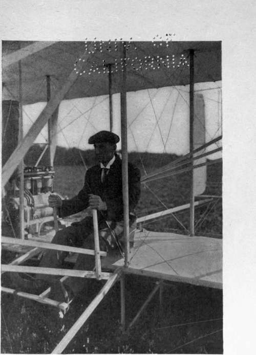

Starting And Alighting. Part 3
Description
This section is from the book "The New Art Of Flying", by Waldemar Kaempffert. Also available from Amazon: The New Art of Flying.
Starting And Alighting. Part 3
Fig. 12. The special launching device invented by the Wright Brothers. The device consists of an inclined rail, about seventy feet long; a pyramidal derrick; a heavy weight arranged to drop within the derrick; and a rope, which is fastened to the weight, passed around a pulley at the top of the derrick, then around a second pulley at the bottom of the derrick over a third pulley at the end of the rail, and finally fastened to a car running on the rail. The car is placed on the rail, and the aeroplane on the car. When a trigger is pulled, the weight falls, and the car is jerked forward. So great is the preliminary velocity thus imparted that the machine is able to rise in a few seconds from the car, which is left behind.
Neither a falling weight nor a starting carriage on rails can be carried with an aeroplane. Hence, a machine thus launched must always return to its derrick. Clearly, an aeroplane which can start up under its own power is preferable to one which is wedded to a starting derrick or any other extraneous launching apparatus. Inasmuch as more power is required for starting by running on the ground (i. e., for accelerating the machine) than for actual flight, the Wright Brothers continued to employ their starting rail long after other aviators had adopted wheels. The result was that they could equip their machine with motors of far less power than their rivals.
Even before the Wright Brothers threw aside all secrecy and flew publicly in France and the United States during the summer of 1908, Curtiss and Farman had made short flights on machines which were mounted on pneumatic-tired wheels. Their machines would run on the wheels for several hundred feet. When sufficient velocity had been attained the pilot would give a slight upward tilt to the elevating rudder, and the machine would leave the ground. The only essential was a fairly smooth, fairly hard piece of ground for the preliminary run. So successful has this system been that in somewhat improved form it is embodied in every modern aeroplane. Even the Wright Brothers, who long persisted in using the starting derrick in the face of the obvious advantages of wheels, abandoned the starting derrick as soon as they had increased the power of their motors. In Fig. 14 one of their later machines is pictured, mounted on wheels.
Although starting wheels enable the aviator to rise from any suitable piece of ground, he pays for that advantage in engine power. A well-made machine, having ample power to fly, but dependent only on its engine and rubber-tired wheels for its initial run, may be unable to rise if the ground is too rough. The engine cannot overcome the loss due to friction. On hard asphalt the cyclist can readily attain a speed of twenty-five miles an hour in a few seconds; on a ploughed field, he may labour hard and yet not make more than ten miles an hour. The aeroplane is in the same position as the bicycle. To start a flying-machine on rough ground requires more power than is afterwards needed for propulsion. Hence we find that the earlier Wright machines, although they could rise only from the perfect surface of a starting rail, were fitted with engines of remarkably low power.
Fig. 20. Mr. Wilbur Wright in the old type Wright biplane.
Photograph by Edwin Levick.
The wheels on which the preliminary run is made may also serve the aviator in alighting. After he shuts off his engine he glides down and runs on the wheels until his momentum is expended. The shock may be sufficient to wreck a machine piloted by an unskilled hand, and the run may be long, unless some form of brake is provided. Recognising these disadvantages early in the course of their experiments, the Wright Brothers fitted their aeroplanes with skids or runners on which the machine alighted. The shock is almost imperceptible, and the machine stops in the course of a few yards without the assistance of a brake. Many machines are now equipped with skids similar to those embodied long ago by Herring and by the Wright Brothers in their early models.
Starting wheels and alighting skids are not easily combined in the same machine. The skids must be elevated sufficiently to clear the ground in making the preliminary run, and yet they must become effective as soon as the machine touches the ground. For that reason the wheels are usually connected with springs, which are compressed as the aeroplane strikes the ground so as to allow the skids to perform the function for which they are designed.
In the Farman biplane, for example, the wheels are mounted on the skids and are attached to rubber springs. When the machine alights the wheels yield, and the skids come into play.
In the Sommer biplane, the framework is carried on two large wheels at the front and two smaller wheels at the rear. The front wheels are attached by rubber springs to two skids, built under the frame. As in the Farman machine, the wheels yield by virtue of this spring mounting.
In Santos-Dumont's monoplane " Demoiselle," springs are dispensed with. The machine starts on two wheels in front and the shock of alighting is broken by a skid at the rear.
An arrangement similar to that of Santos-Dumont is to be found in the Antoinette machines. The mounting consists of two wheels at the front and a skid at the rear. No springs are provided for the wheels.
In the Curtiss and Voisin biplane machines, as well as in some others of minor importance, no skids at all are employed. The machine starts and alights on the same set of wheels, and is usually stopped by brakes. On the whole the combination of wheels and skids seems to be more desirable, particularly for a heavy machine.
Continue to: